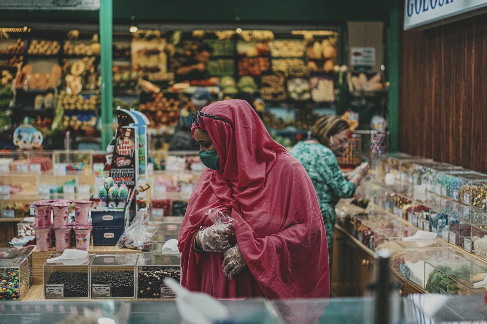

Our Services

Satisfied customers
Customer satisfaction is the key to making or breaking brands.
In this competitive world of a huge number of brands,
customer satisfaction has to be focal to your customer strategy.
No amount of Banking campaigns and promotions will help you if your customers are not satisfied.

Safety
Banking online has made managing money a lot more convenient than it used to be.
We don't have to visit the bank to transfer our funds,
or wait for the next paper statement to know what the balance is.
All that information is at our fingertips.
Advantage
Savings accounts are one of the most liquid investments.
Your money is readily available. If this is important to you,
saving money in a bank would be a better option than investing
in the stock market.